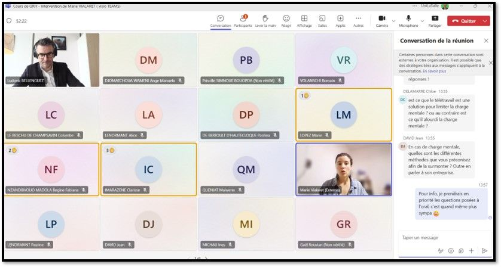

Vous avez des difficultés pour lire ce mail ? Consultez la version en ligne.
Bonjour,
Est-ce que ca t'es déjà arrivé de sentir qu'au travail, on t'attribue une tâche par défaut parce que tu es une femme ? Ou parce que tu es un homme ?
Il y a quelques jours, j'ai reçu ce témoignage :
“La charge mentale au travail, c'est quand mes collègues masculins me demandent où est la réunion, à quelle heure… alors que je ne suis pas concernée.
Après des années d'esquive polie, j'ai fini par répondre de manière frontale : "Je ne suis pas ton assistante" et "C'est ton agenda, pas le mien". Aujourd'hui, ils ne me le demandent plus, mais lorsqu'on assiste à une réunion en commun, ils comptent quand même sur moi pour avoir noté le numéro de la salle.”
Ce n'est pas pour rien que quand on dit “secrétaire”, on pense immédiatement à une femme en tailleur et pas à un homme en costume. On attend des femmes qu'elles prennent en charge tous les “détails” de la vie au bureau :
📍 savoir où est la réunion, à quelle heure et avec qui,
📍 prendre des notes,
📍 réserver la salle,
📍 voire apporter le café...
Bien souvent, ces tâches ne figurent nulle part dans leur fiche de poste. Et ça pèse (lourdement) sur l'énergie, le temps et donc la carrière de celles qui les prennent en charge.
Au fait, mercredi dernier, au micro de VivreFM, on a réexpliqué ce que c'est que la charge mentale, ses conséquences et les enjeux sociétaux qu'elle recouvre. Un podcast à (ré)écouter et à partager à ton entourage pour leur expliquer le sujet ! 👇
Je reprends :
Samedi 8 mars, c'était la Journée Internationale de Lutte pour les Droits des Femmes. À cette occasion, il me semble important de mettre en avant un angle mort de la charge mentale : on parle beaucoup (encore que !) de l'impact de l'inégal partage des tâches domestiques sur la carrière et l'indépendance financière des femmes. Mais on ne parle jamais de la charge mentale qui s'invite au travail, toujours à travers les stéréotypes de genre. Au boulot, ce sont les femmes qui :
- rachètent du café pour tout le monde,
- lavent les tasses et vident les corbeilles à papier,
- organisent le cadeau commun de départ à la retraite de Michel·le,
- réservent le resto pour fêter la signature d'un gros client,
- et j'en passe…
Commentaires de la communauté @taspensea.
Tout ça prend du temps et de l'énergie qui ne sont pas consacrés à autre chose (par exemple : prendre le temps de bien monter sa demande d'augmentation. D'ailleurs, nous sommes beaucoup moins nombreuses à en demander que nos collègues masculins). Ça génère des frustrations, qui nuisent nécessairement aux relations et au travail de l'équipe.
Mais cette année, on en a parlé...
... et longuement, avec les étudiant·es de l'école d'ingénieurs UniLaSalle (Beauvais) : plus de 300 étudiant·es en agronomie, alimentation & santé, et géosciences étaient réuni·es pour échanger sur la charge mentale et ses impacts sur le monde professionnel, dans le cadre de leur cours de gestion des ressources humaines. Et iels étaient toustes super engagé·es :
- Quel est le lien entre charge mentale et syndrome de l'imposteur ?
- Est-ce que le télétravail est une solution pour limiter la charge mentale ? Ou au contraire, est-ce qu'il l'alourdit ?
- Conseils pour aborder la charge mentale dans le cadre d'une discussion au travail ?
- Quel conseil donneriez-vous aux jeunes professionnel·les qui souhaitent agir concrètement pour réduire les inégalités de genre dans leur secteur ?
… et bien d'autres questions auxquelles j'ai pu apporter des éléments de réponse.
Crédit photo : Ludovic Bellenguez
Ma conclusion suite à cet échange :
Il est crucial de parler de la répartition genrée des responsabilités dans le monde professionnel, et auprès des futur·es professionnel·les.
Il est temps d'arrêter de faire comme si nos vies personnelles n'avaient aucun impact sur nos carrières et nos revenus à toustes.
Gérer une équipe, ce n'est pas que coordonner des personnes et leur attribuer des tâches, c'est aussi s'assurer que chacun·e soit et se sente inclus·e, valorisé·e et respecté·e, et que personne ne porte seul·e la responsabilité des tâches “annexes” qui mettent de l'huile dans les rouages des relations interpersonnelles et assurent que “tout roule”. C'est avoir le courage d'affirmer que la charge mentale n'est pas un “petit” sujet, d'encourager ses collaborateur·ices à en parler et surtout, de les écouter.
👉 Et toi, penses-tu qu'aborder le sujet des responsabilités genrées (travail rémunéré = hommes, travail domestique = femmes) dans le monde pro, et même avant (au lycée, à l'université), est une bonne idée ? Donne-moi ton avis en répondant directement à ce mail. J'ai hâte de te lire !
Bon week-end et à bientôt !

Conférencière & Consultante
Présidente · Association tpà
marievialaret.com
PS : Tu as aimé lire ce mail ? Partage-le à un·e ami·e et invite-le/la à s'inscrire !